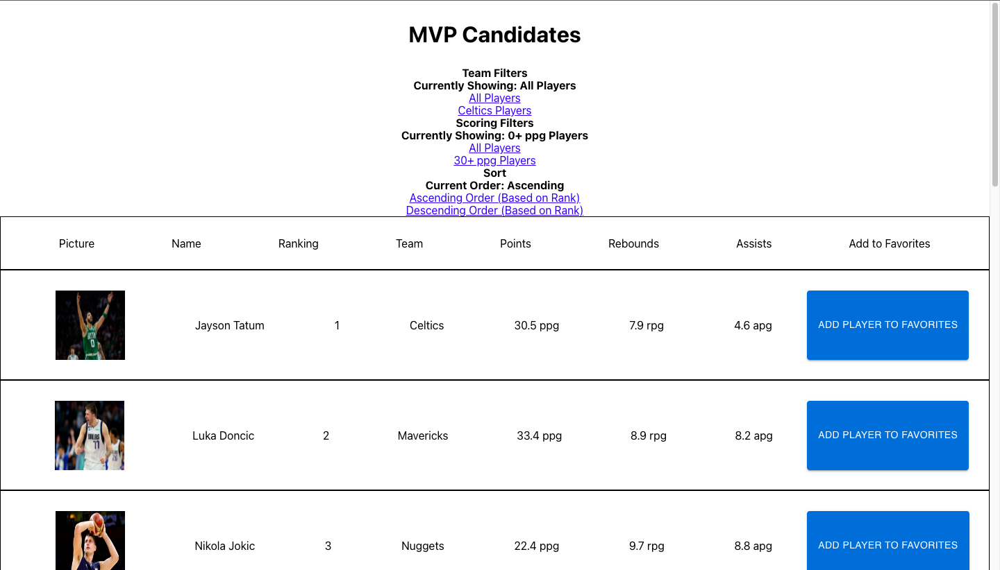

In an effort to learn about React web application development, I decided to develop an NBA MVP Tracker.
This application is meant to be an MVP Tracker that keeps track of the NBA MVP race. It provides users with many of the most important and relevant statistics for each player, as well as their individual rankings in the race. It also allows users to add players to their own Favorites list so that they can easily keep track of their favorite players.
I wanted to make sure the filters and sorting were easy to find, so I kept those at the top of the page above the list of MVP candidates. The filters give users an easy way to view only the players that they want to see based on various criteria such as team or average points per game. I also didn't want to create a separate sidebar for the Favorites list, as I felt it wouldn't give enough space to clearly display the stats for each of the players, so I kept the Favorites list at the bottom of the page, that way in both the MVP tracker and the Favorites list, all the stats and buttons for each player were displayed clearly.
The main component in my application is the PlayerItem component, which lists out all the statistics for a player and contains their picture alongside a button to add them to the user's Favorites list. The props that the component uses are a newPlayer object, which contains the players relevant statistics, an onButtonClick function which is used to pass the functionality of the button in the PlayerItem component, and finally a buttonText prop. The buttonText prop is used to fill in the text for the button, which is usually "Add Player to Favorites". The reason this prop is necessary is that I used the same PlayerItem component in the Favorites list, however, there the button is used to remove players from the Favorites list, so the button text needs to be different to signify this. In App.js, I used a few different states. The first was a state that kept track of all the players that were in the Favorites list. The second was a variable for the filter that filtered the list by teams. This variable kept track of which teams were being displayed. The third was a variable for the filter that filtered the list by minimum points per game. This variable kept track of what this minimum points per game value was. Finally, I used a state variable in order to keep track of how the players were sorted. It could either be in ascending or descending order with relation to sthe ranking of the players in the MVP race.
You can check out my final product here.